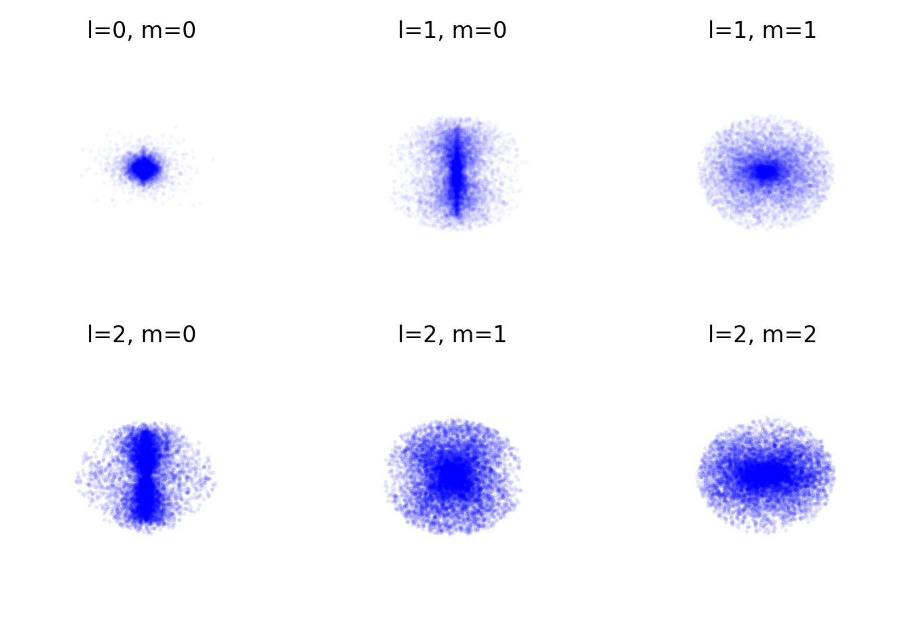

Now that we’ve discussed the angular momentum operator, we can tackle one of the most important problems in quantum mechanics: the hydrogen atom. The hydrogen atom consists of a proton and an electron bound together by the Coulomb force. This system is particularly important because:
It is the simplest atomic system and can be solved analytically
More complex atoms can be understood as perturbations of the hydrogen atom
It demonstrates key quantum mechanical concepts like quantization and orbital angular momentum
Let’s approach this step by step, starting with the Schrödinger equation in spherical coordinates.
The Schrödinger Equation in Spherical Coordinates
For a spherically symmetric potential, the time-independent Schrödinger equation takes the form:
This equation looks intimidating, but we can break it down into manageable pieces using a powerful mathematical technique called separation of variables.
Separation of Variables
The key insight is that the wavefunction can be written as a product of functions, each depending on only one coordinate:
\[
\psi \left( r,\vartheta,\varphi \right) = R \left( r \right) \cdot \Theta \left(\vartheta\right) \cdot \Phi \left(\varphi \right) \mathrm{.}
\]
This separation ansatz reflects the spherical symmetry of the problem. Each function will describe a different aspect of the electron’s behavior: - \(R(r)\) describes how the probability density varies with distance from the nucleus - \(\Theta(\theta)\) and \(\Phi(\phi)\) together describe the angular distribution of the electron
Substituting this into the Schrödinger equation and rearranging terms:
This equation has a remarkable property: the left side depends only on \(\phi\), while the right side depends only on \(r\) and \(\vartheta\). For this equality to hold for all values of the coordinates, both sides must equal a separation constant, which we’ll call \(C_1\).
Again, the left side depends only on \(\vartheta\) while the right side depends only on r, introducing another separation constant \(C_2\). For the \(\vartheta\) equation:
For finite solutions, we need \(C_2 = l(l+1)\) where \(l\) is an integer \(\geq 0\). This gives us our second quantum number \(l\), which represents the total angular momentum.
For \(m \neq 0\), we get associated Legendre polynomials:
The graph below shows the spherical harmonics for \(l=0,1,2,3\) and \(m=0,1,2,3\).
Code
#def plot_spherical_harmonic(l, m, ax):# Create meshgrid for theta and phi phi = np.linspace(0, 2*np.pi, 100) theta = np.linspace(0, np.pi, 100) phi, theta = np.meshgrid(phi, theta)# Calculate the spherical harmonic Y = sph_harm(m, l, phi, theta)# Convert to cartesian coordinates r = np.abs(Y) x = r * np.sin(theta) * np.cos(phi) y = r * np.sin(theta) * np.sin(phi) z = r * np.cos(theta)# Plot the surface surf = ax.plot_surface(x, y, z, cmap='seismic') ax.set_title(f'l={l}, m={m}', fontsize=6, pad=0) ax.set_axis_off()# Create figure with subplotsfig = plt.figure(figsize=get_size(12, 16))# Plot l=0ax = fig.add_subplot(4, 4, 1, projection='3d')plot_spherical_harmonic(0, 0, ax)# Plot l=1for m inrange(2): ax = fig.add_subplot(4, 4, 5+m, projection='3d') plot_spherical_harmonic(1, m, ax)# Plot l=2for m inrange(3): ax = fig.add_subplot(4, 4, 9+m, projection='3d') plot_spherical_harmonic(2, m, ax)# Plot l=3for m inrange(4): ax = fig.add_subplot(4, 4, 13+m, projection='3d') plot_spherical_harmonic(3, m, ax)plt.tight_layout()plt.show()
/var/folders/t4/_9qps8wj56jc60nwkr3nrcr00000gn/T/ipykernel_46122/371888931.py:9: DeprecationWarning: `scipy.special.sph_harm` is deprecated as of SciPy 1.15.0 and will be removed in SciPy 1.17.0. Please use `scipy.special.sph_harm_y` instead.
Y = sph_harm(m, l, phi, theta)
Figure 1— Spherical harmonics for l=0,1,2,3 and m=0,1,2,3
Solving the Radial Part: \(R \left( r \right)\)
Having solved the angular parts using spherical harmonics, we now tackle the final piece - the radial function \(R(r)\) that describes how the wavefunction varies with distance from the nucleus. From our previous separation of variables, we found that \(C_2\) satisfies:
\[
\begin{aligned}
C_2 & = l \left( l+1 \right) \\
{} & = \frac{1}{R \left( r \right)} \frac{\mathrm{d}}{\mathrm{d} r} \left( r^2 \frac{\mathrm{d} R \left( r \right)}{\mathrm{d} r} \right)
+ \frac{2m}{\hbar^2} \left( E - V\left( r \right) \right) r^2
\end{aligned} \mathrm{.}
\]
Multiplying by \(R(r)\) and dividing by \(r^2\) gives us:
\[
\begin{aligned}
\frac{l \left( l+1 \right)}{r^2} R \left( r \right) & =
\frac{1}{r^2} \frac{\mathrm{d}}{\mathrm{d} r} \left( r^2 \frac{\mathrm{d} R \left( r \right)}{\mathrm{d} r} \right)
+ \frac{2m}{\hbar^2} \left( E - V\left( r \right) \right) R \left( r \right)
\end{aligned} \mathrm{,}
\]
Here, the quantum number \(l\) determines the angular momentum \(\left| \vec{L} \right| = \sqrt{l \left( l+1 \right)} \cdot \hbar\). For the hydrogen atom, we use the Coulomb potential:
\[
V \left( r \right) = - \frac{Z e^2}{4 \pi \varepsilon_0 r}
\]
Where \(Z\) is the atomic number (\(Z=1\) for hydrogen) and \(\varepsilon_0\) is the vacuum permittivity. We also use the reduced mass \(\mu\) instead of the electron mass \(m\) to account for the finite nuclear mass:
\[\frac{1}{\mu} = \frac{1}{m_e} + \frac{1}{m_n}\]
After some algebra, we get the radial equation:
\[
\begin{aligned}
0 & =
\frac{\mathrm{d}^2 R \left( r \right)}{\mathrm{d} r^2} + \frac{2}{r} \frac{\mathrm{d} R \left( r \right)}{\mathrm{d} r}
+ \left( \frac{2\mu}{\hbar^2} \left( E + \frac{Z e^2}{4 \pi \varepsilon_0 r} \right) - \frac{l \left( l+1 \right)}{r^2} \right) R \left( r \right)
\end{aligned} \mathrm{.}
\]
This is a second-order differential equation. For bound states (\(E < 0\)), the physical nature of the problem suggests an exponential decay at large distances. We can understand this intuitively: as \(r \to \infty\), the potential energy approaches zero, so the Schrödinger equation approximately becomes:
This has solutions of the form \(e^{\pm \kappa r}\) where \(\kappa = \sqrt{\frac{-2\mu E}{\hbar^2}}\). Since we require the wavefunction to be normalizable, we must choose the decaying solution. This motivates the ansatz:
\[
R \left( r \right) = u \left( r \right) \cdot \mathrm{e}^{- \kappa r} \mathrm{,}
\]
where \(\kappa = \sqrt{\frac{-2\mu E}{\hbar^2}}\). The exponential factor ensures the wavefunction goes to zero at infinity, as required for bound states. We also introduce:
\[
a = \frac{\mu Z e^2}{4 \pi \varepsilon_0 \hbar^2}
\]
This gives us a simpler equation for \(u(r)\):
\[
\begin{aligned}
0 & =
\frac{\mathrm{d}^2 u \left( r \right)}{\mathrm{d} r^2}
+ 2 \left( \frac{1}{r} - \kappa\right) \frac{\mathrm{d} u \left( r \right)}{\mathrm{d} r}
+ \left(2 \frac{a-\kappa}{r} - \frac{l \left( l+1 \right)}{r^2} \right) u \left( r \right)
\end{aligned} \mathrm{.}
\]
We can solve this using a power series:
\[
u \left(r\right) = \sum_j b_j r^j \mathrm{.}
\]
Substituting this into our equation and comparing coefficients gives us a recursive formula:
This is the famous Bohr formula for the energy levels of hydrogen-like atoms! Here \(Ry^*\) is the Rydberg energy. The quantum number \(n\) must be a positive integer, explaining why atomic energy levels are quantized.
From the denominator of our recursive formula, we also get:
\[
l \le j \le n-1
\]
This gives us an important constraint on the angular momentum quantum number:
\[
l \le n-1 \mathrm{.}
\]
The complete radial function \(R_{n,l}(r)\) therefore depends on two quantum numbers:
\(n\) (principal quantum number)
\(l\) (angular momentum quantum number)
The first few normalized radial functions are shown in the table below (\(N = \left(Z/\left( a_0 n\right)\right)^{3/2}\), \(x = Z r / \left(a_0 n\right)\), \(a_0 = 4 \pi \varepsilon_0 \hbar^2 / \left(\mu e^2 \right)\) is the Bohr radius):
def R_nl(n, l, r): x = r # Simplified version without physical constantsif n ==1and l ==0:return2* np.exp(-x) # Already normalizedelif n ==2:if l ==0:return (1/np.sqrt(2)) * (2-x) * np.exp(-x/2)elif l ==1:return (1/np.sqrt(6)) * x * np.exp(-x/2)elif n ==3:if l ==0:return (2/np.sqrt(27)) * (6-6*x+x**2) * np.exp(-x/3)elif l ==1:return (8/(27*np.sqrt(6))) * x * (4-x) * np.exp(-x/3)elif l ==2:return (4/(81*np.sqrt(30))) * x**2* np.exp(-x/3)return0r = np.linspace(0, 40, 1000)fig, ((ax1, ax1p), (ax2, ax2p), (ax3, ax3p)) = plt.subplots(3, 2, figsize=get_size(10,12))# n = 1ax1.plot(r, R_nl(1,0,r), label='1s (l=0)')ax1.set_title('n = 1')ax1.legend()ax1p.plot(r, R_nl(1,0,r)**2, label='1s (l=0)')ax1p.set_title('n = 1 probability density')ax1p.set_ylim(0,2)ax1p.set_xlim(0,20)# n = 2ax2.plot(r, R_nl(2,0,r), label='2s (l=0)')ax2.plot(r, R_nl(2,1,r), label='2p (l=1)')ax2.set_title('n = 2')ax2.legend()ax2p.plot(r, R_nl(2,0,r)**2, label='2s (l=0)')ax2p.plot(r, R_nl(2,1,r)**2, label='2p (l=1)')ax2p.set_title('n = 2 probability density')ax2p.set_ylim(0,2)ax2p.set_xlim(0,20)# n = 3ax3.plot(r, R_nl(3,0,r), label='3s (l=0)')ax3.plot(r, R_nl(3,1,r), label='3p (l=1)')ax3.plot(r, R_nl(3,2,r), label='3d (l=2)')ax3.set_title('n = 3')ax3.legend()ax3p.plot(r, R_nl(3,0,r)**2, label='3s (l=0)')ax3p.plot(r, R_nl(3,1,r)**2, label='3p (l=1)')ax3p.plot(r, R_nl(3,2,r)**2, label='3d (l=2)')ax3p.set_title('n = 3 probability density')ax3p.set_ylim(-0.1,2)ax3p.set_xlim(0,20)ax3.set_xlabel(r'$r/a_0$')ax3p.set_xlabel(r'$r/a_0$')fig.supylabel(r'$R(r)$ / $|R(r)|^2$')plt.tight_layout()plt.show()
Figure 2— Radial wavefunctions R(r) for n=1,2,3
A key result is that the energy depends only on n, not on l or m. For each l value, there are 2l+1 degenerate states (different m values with the same energy). The total number of states for a given n is:
import numpy as npimport matplotlib.pyplot as pltfrom mpl_toolkits.mplot3d import Axes3Dfrom scipy.special import sph_harmimport randomdef hydrogen_wavefunction(n, l, m, r, theta, phi):# Include radial part for n=1, l=0if n ==1and l ==0:return (1/np.sqrt(np.pi)) * np.exp(-r) * sph_harm(m, l, phi, theta)return sph_harm(m, l, phi, theta)# Create meshgridr = np.linspace(0, 10, 50)theta = np.linspace(0, np.pi, 50)phi = np.linspace(0, 2*np.pi, 50)# Number of total points to generate and sample fromn_points_total =200000n_points_plot =10000# Create figurefig = plt.figure(figsize=get_size(12, 8))# Plot for different quantum statesfor idx, (l, m) inenumerate([(0,0), (1,0), (1,1)]): ax = fig.add_subplot(2, 3, idx+1, projection='3d')# Generate more points than we'll plot r_points = np.random.uniform(0, 10, n_points_total) theta_points = np.random.uniform(0, np.pi, n_points_total) phi_points = np.random.uniform(0, 2*np.pi, n_points_total)# Calculate wavefunction psi = hydrogen_wavefunction(1, l, m, r_points, theta_points, phi_points) probability = np.abs(psi)**2# Sample points according to probability prob_normalized = probability / np.sum(probability) indices = np.random.choice(n_points_total, n_points_plot, p=prob_normalized) r_sampled = r_points[indices] theta_sampled = theta_points[indices] phi_sampled = phi_points[indices] probability_sampled = probability[indices]# Convert to Cartesian coordinates x = r_sampled * np.sin(theta_sampled) * np.cos(phi_sampled) y = r_sampled * np.sin(theta_sampled) * np.sin(phi_sampled) z = r_sampled * np.cos(theta_sampled)# Plot points with probability-based transparency scatter = ax.scatter(x, y, z, c='blue', alpha=0.04, s=2, edgecolors='none') ax.set_title(f'l={l}, m={m}') ax.set_axis_off()# Add second row with l=2for idx, m inenumerate([0, 1, 2]): ax = fig.add_subplot(2, 3, idx+4, projection='3d')# Generate more points than we'll plot r_points = np.random.uniform(0, 10, n_points_total) theta_points = np.random.uniform(0, np.pi, n_points_total) phi_points = np.random.uniform(0, 2*np.pi, n_points_total)# Calculate wavefunction psi = hydrogen_wavefunction(1, 2, m, r_points, theta_points, phi_points) probability = np.abs(psi)**2# Sample points according to probability prob_normalized = probability / np.sum(probability) indices = np.random.choice(n_points_total, n_points_plot, p=prob_normalized) r_sampled = r_points[indices] theta_sampled = theta_points[indices] phi_sampled = phi_points[indices] probability_sampled = probability[indices]# Convert to Cartesian coordinates x = r_sampled * np.sin(theta_sampled) * np.cos(phi_sampled) y = r_sampled * np.sin(theta_sampled) * np.sin(phi_sampled) z = r_sampled * np.cos(theta_sampled)# Plot points with probability-based transparency scatter = ax.scatter(x, y, z, c='blue', alpha=0.1,s=2,edgecolors='none') ax.set_title(f'l=2, m={m}') ax.set_axis_off()plt.tight_layout()plt.show()
/var/folders/t4/_9qps8wj56jc60nwkr3nrcr00000gn/T/ipykernel_46122/2144809601.py:10: DeprecationWarning: `scipy.special.sph_harm` is deprecated as of SciPy 1.15.0 and will be removed in SciPy 1.17.0. Please use `scipy.special.sph_harm_y` instead.
return (1/np.sqrt(np.pi)) * np.exp(-r) * sph_harm(m, l, phi, theta)
/var/folders/t4/_9qps8wj56jc60nwkr3nrcr00000gn/T/ipykernel_46122/2144809601.py:11: DeprecationWarning: `scipy.special.sph_harm` is deprecated as of SciPy 1.15.0 and will be removed in SciPy 1.17.0. Please use `scipy.special.sph_harm_y` instead.
return sph_harm(m, l, phi, theta)

Hydrogen wavefunctions for n=1, l=0,1,2 and m=0,1,2